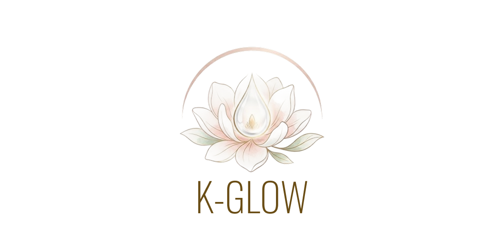
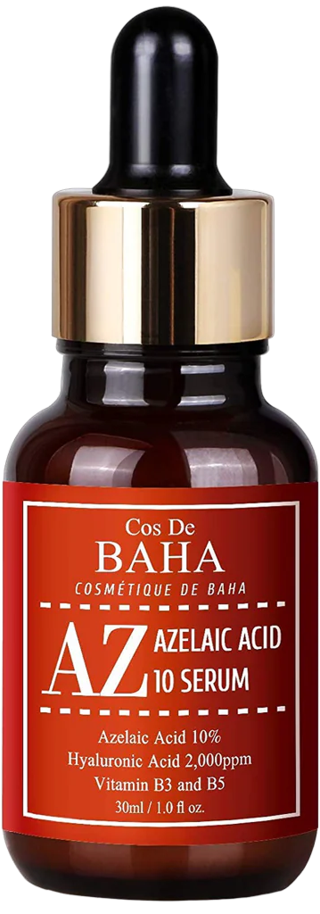
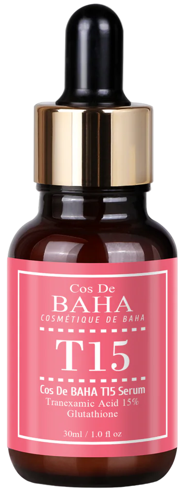
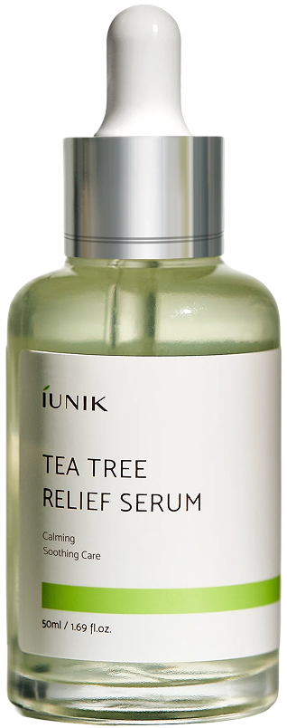
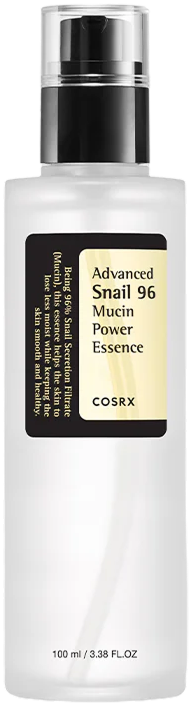
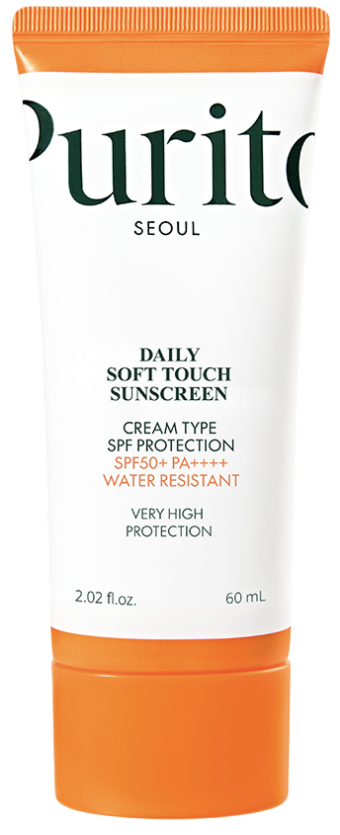
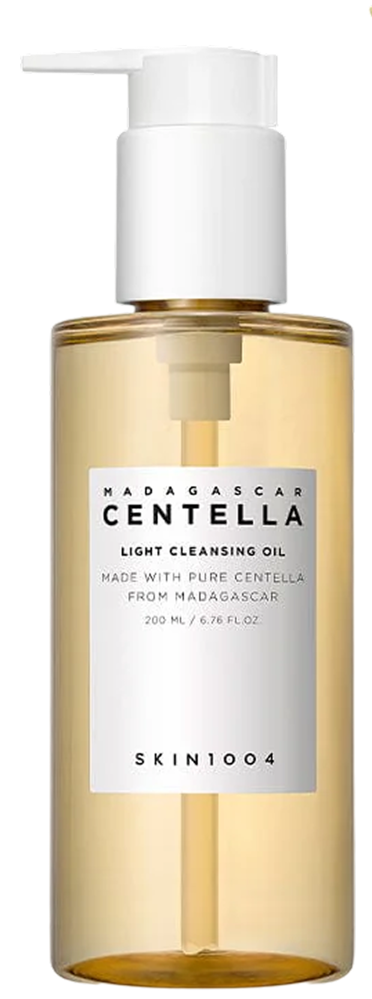
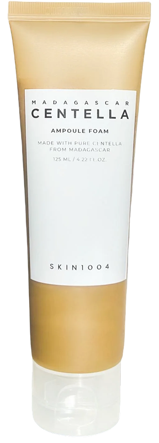
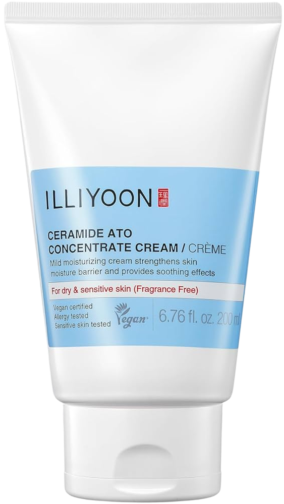

1. ניקוי במים פושרים
שטיפת הפנים במים פושרים בלבד כדי לא לייבש את העור ולשמור על הלחות הטבעית שנוצרה במהלך הלילה.

אם הגעת לעמוד הזה, כנראה שגם את עייפת מהבטחות קסם על "מוצרים שיעלימו לך את האקנה ביומיים" או משגרות מטורפות של 12 שלבים שעולות כמו משכנתא. אנחנו יודעות בדיוק איך זה מרגיש לעמוד מול המראה, מתוסכלת, ולנסות להבין איזה רכיב ירגיע את העור ואיזה רק יחמיר את המצב.
חומצות פעילות וממוקדות (חומצה אזלאית וטרנקסמית) שמטפלות ישירות בדלקת, בחיידקי האקנה ובכתמים האדומים שהם משאירים מאחור.
רכיבי שיקום והרגעה קוריאניים (K-Beauty) כמו ריר חלזונות, עץ התה וסרמידים, שדואגים שהעור יישאר לח, רגוע ומאוזן – בלי להתייבש או להתקלף.
גללי למטה כדי לראות את השלבים המדויקים, המוצרים המומלצים (עם קישורים ישירים לאיפה שכיף ומשתלם לקנות) וההבדל המרכזי בין מה שהעור שלך צריך בבוקר לבין מה שהוא חייב לקבל בלילה.
שטיפת הפנים במים פושרים בלבד כדי לא לייבש את העור ולשמור על הלחות הטבעית שנוצרה במהלך הלילה.

רכיב מפתח אנטי-דלקתי ואנטי-בקטריאלי המטפל בהתפרצויות אקנה, מפחית אדמומיות ומסייע במניעת סתימת נקבוביות.

סרום עוצמתי לטיפול בכתמי פוסט-אקנה (PIE/PIH). עוזר לאזן את גוון העור ומבהיר סימנים אדומים וכהים שנשארו מפצעונים בעבר.

סרום המבוסס על מי עץ התה וסנטלה. מעניק הרגעה מיידית לעור מגורה, ומספק הגנה אנטי-ספטית עדינה מפני פצעונים חדשים.

הקלאסיקה הקוריאנית! תמצית המעניקה לחות עמוקה, מזרזת ריפוי של פצעים אקנתיים פעילים ומשפרת את מרקם העור.

שלב חובה! מגן על העור מפני נזקי השמש ומבוסס על מסננים היברידיים שאינם מכבידים על עור שמן או אקנתי.

שלב ראשון בניקוי הערב: שמן קליל המבוסס על סנטלה, הממיס ביעילות את שאריות קרם ההגנה, הסבום העודף והלכלוך שהצטבר.

שלב שני בניקוי הערב: קצף ניקוי עדין על בסיס מים שמנקה באופן סופי את נקבוביות העור ומכין אותו לקליטת החומצות.
רכיב מפתח אנטי-דלקתי ואנטי-בקטריאלי המטפל בהתפרצויות אקנה, מפחית אדמומיות ומסייע במניעת סתימת נקבוביות.
סרום עוצמתי לטיפול בכתמי פוסט-אקנה (PIE/PIH). עוזר לאזן את גוון העור ומבהיר סימנים אדומים וכהים שנשארו מפצעונים בעבר.
סרום המבוסס על מי עץ התה וסנטלה. מעניק הרגעה מיידית לעור מגורה, ומספק הגנה אנטי-ספטית עדינה מפני פצעונים חדשים.

ההגנה המושלמת למחסום העור! קרם עשיר בסרמידים מרוכזים הנועל את כל הלחות, מונע יובש וגירויים מהחומצות, ומשקם את העור במהלך הלילה.